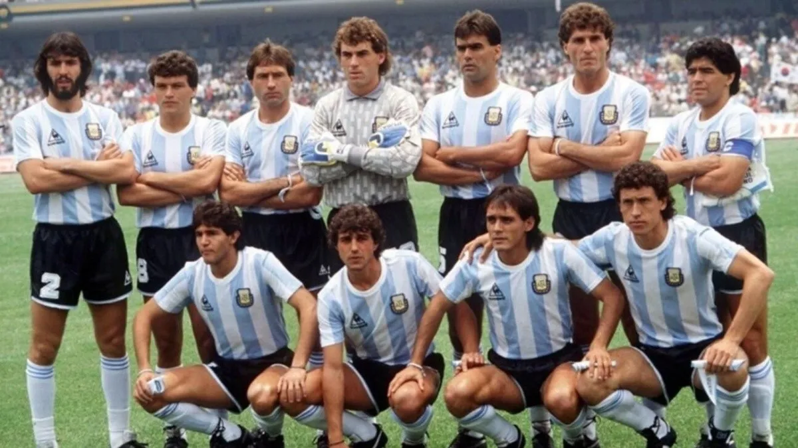

Mundiales ganados por la seleccion Argentina y su historia
Mundial 1978
La Copa Mundial de la FIFA Argentina 1978 fue la undécima edición de la Copa Mundial de Fútbol y se desarrolló en Argentina, entre el 1 de junio y el 25 de junio de 1978. La Copa del Mundo volvía así a Sudamérica por primera vez desde Chile en 1962. El torneo fue disputado en seis estadios, repartidos en las ciudades de Buenos Aires, Rosario, Mar del Plata, Córdoba y Mendoza. La selección local fue campeona, cuya principal figura fue Mario Kempes, reconocido como el mejor jugador del evento. Se jugó con el mismo sistema de eliminación que en Alemania Federal 1974: una primera ronda con cuatro grupos clasificatorios, donde los dos primeros de cada uno pasaron a la segunda fase, en la que se definieron los dos finalistas. La final se jugó entre los Países Bajos, ganador del grupo A, y Argentina, que clasificó ganando el grupo B. Fue un partido muy disputado en el que los equipos debieron ir a tiempo suplementario, ya que en los 90 minutos habían empatado 1:1. Finalmente, con goles de Kempes (2) y Daniel Bertoni (1), la selección albiceleste se impuso por 3:1, levantando la copa por primera vez, luego de que se le hubiera escapado 48 años antes en Uruguay 1930, al perder por 4:2 en la final, ante el combinado local.

Mundial 1986
La Copa Mundial de la FIFA México 1986 fue la decimotercera edición de la Copa Mundial de Fútbol, que se desarrolló entre el 31 de mayo y el 29 de junio. México se convirtió en el primer país en celebrar dos veces una Copa del Mundo, cuando el Comité Ejecutivo de la FIFA, tras una reunión en Estocolmo, Suecia en mayo de 1983, decidió sustituir la sede seleccionada en 1974, Colombia, que tuvo que declinar en noviembre de 1982 ante la imposibilidad de cumplir con los requerimientos que FIFA exigió para celebrar el evento. Fueron 24 selecciones las que acudieron al torneo y 52 partidos celebrados, al igual que en el mundial anterior. La mascota fue Pique y el balón oficial fue el Adidas Azteca México, el primero fabricado con materiales sintéticos, lo que aumentaba la impermeabilidad y la durabilidad, brindando mejor rendimiento en campos de juego duros, con mucha humedad y a grandes alturas.
Mundial 2022
La Copa Mundial de la FIFA Catar 2022 fue la vigésima segunda edición de la Copa Mundial de Fútbol masculino organizada por la FIFA. Esta edición del evento se desarrolló del 20 de noviembre al 18 de diciembre en el otoño de Catar, que consiguió los derechos de organización el 2 de diciembre de 2010. Esta fue la tercera vez que el torneo se disputó en el continente asiático tras la edición de 2002 jugada en Corea del Sur y Japón y la de Rusia 2018 (aunque esta última contaba con una sola sede en territorio asiático) y la primera que se celebró en Asia Occidental. También, por primera vez, el torneo tuvo lugar en Oriente Próximo, en un país árabe y de mayoría musulmana, así como el de menor extensión territorial. Por otra parte, fue el Mundial de mayor tiempo de espera desde 1950 respecto a su edición anterior, ya que se desarrolló entre noviembre y diciembre de 2022, a diferencia de los habituales junio y julio. Paralelamente, fue la Copa más corta desde 1978, pues la competición se desarrolló solamente durante veintinueve días, a diferencia de los usuales treinta y dos en los últimos campeonatos.